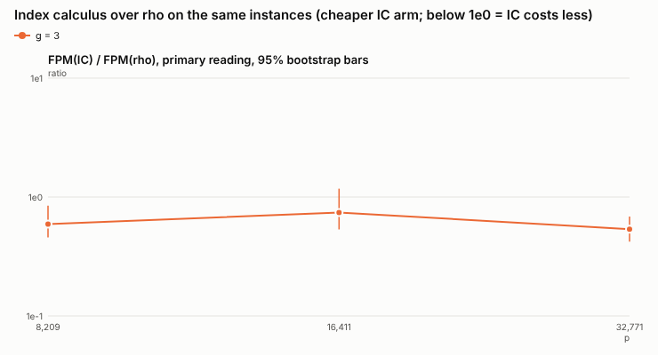

Status: [pcc:unverified] (shared host, no independent
replay). Protocol PROTOCOL.md
(frozen before data, frozen.sha256); binary
binary.sha256; data sge_g3.jsonl, joined with
the scaling study’s scale_g3.jsonl (rho rows) into
joined_analysis.json; tables.md;
data.sha256; bench record
benchmarks/records/20261115T0609Z-genus-ladder-sge-scale.json.
36 runs (3 primes × 3 curves × 2 seeds × {unmerged, SGE(8,3)}), all certified with the planted t. The nine instances are the scaling study’s (9/9 instance lines identical) and the unmerged arm’s 18 rows are identical to the scaling study’s field for field, so the rho rows of that study are the matched reference (same instances, same seeds).

| p | 2LP+pre / rho | 2LP+pre+SGE(8,3) / rho | SGE arm’s la_mul /
unmerged |
FPM band (SGE arm) |
|---|---|---|---|---|
| 8209 | 0.591 [0.457, 0.846] | 0.290 [0.224, 0.428] | 0.32 | below |
| 16411 | 0.741 [0.534, 1.175] | 0.383 [0.266, 0.726] | 0.36 | below |
| 32771 | 0.537 [0.422, 0.687] | 0.283 [0.221, 0.361] | 0.39 | below |
Exponents (FPM primary, three primes): unmerged 1.344 [1.335, 1.356];
SGE arm 1.398 [1.385, 1.410]; rho 1.413 [1.143, 1.740]. The SGE arm’s
exponent is higher than the unmerged arm’s because the merge removes a
smaller share of the linear algebra as the core grows (la
ratio 0.32 → 0.39): with w_max = 8 fixed, the fraction of
columns light enough to merge falls with the core size. GAE band:
unresolved at every prime (at w = 1 the arm is 10–14× rho;
at w = 0 it is 0.07–0.10).
Scorecard: Z1 held (9/9, 18/18); Z2 held (36/36); Z3 held (0.283 in [0.22, 0.42]; below across the FPM band at all three primes); Z4 held (0.31–0.39 in [0.20, 0.40]); Z5 held.
This is the best measured arm of the program at genus 3 over F_p:
about 0.3 of negation-map rho on the primary cross-genus reading, with
the whole stack (double large primes, parity prefilter, structured
elimination) certified on every run and the baseline path byte-identical
to the frozen studies. Under the §5a GAE band the comparison with rho
stays unresolved, because that band prices a native multiplication like
a group operation at w = 1. Distance remaining to rho at
w = 1: about 10×. The next knob is the merge depth (the
la ratio drifts up with p).
Three primes, nine instances, two seeds; shared 4-vCPU host; no independent replay; the FPM prices are stated conventions.